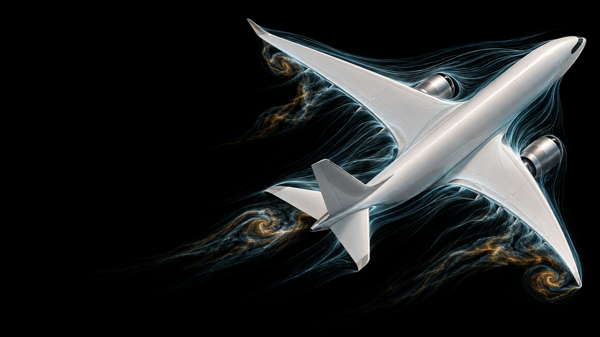
Physical Sciences and Engineering | AI+X
Zurich · Oct 1st
World models
for
fluid dynamics
Cristian Bodnar
Project Prometheus
Worlds we can generate
How much
lift?
Pressure. Shear. Forces.
For this geometry, at this speed.
Physics already gives us
world models
Numerical simulations are
the wrong inference engine
Physical laws
→ F(u) = 0The equations
↓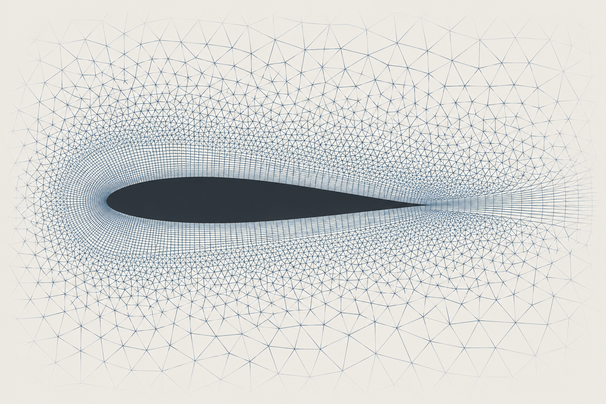
→ u0 → ··· → uN → yNew design
Prepare mesh
Run simulation
Prediction
Distilling reality into
neural networks
Observations
+ simulations
Learned weights
↓New case
Reuse the weights
Fast, mesh-free inference
Today: narrow surrogates
Training distribution
Deployment
Variations of a car
An unseen geometry
Accurate on cars ≠ reliable on motorcycles
A foundation model
for the
Earth system
Aurora
Bodnar et al. · Nature, 2025
Pre-training:
from next token to next state
LLMs
The sky is
→Transformer
→blue
Next token
Aurora
xt−Δt, xt
→3D Swin
Transformer
xt+Δt
Next state · Δt ahead
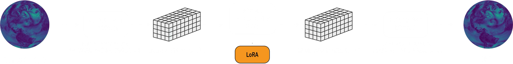
Aurora · Bodnar et al., Nature 2025 · Architecture from the original presentationMore pretraining data,
better forecasts
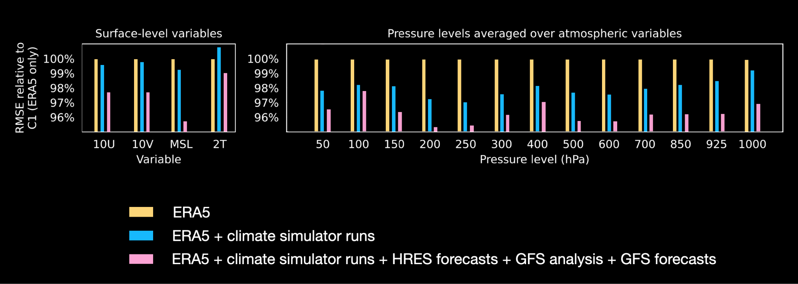
Larger pretrained models
improve forecast quality
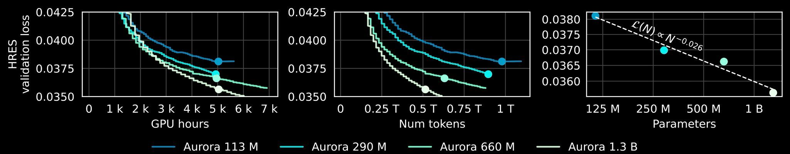
113 million → 1.3 billion parameters
Original model-scaling study · Lower validation loss is better · Aurora, Nature 2025One foundation.
Four forecasts.
Air quality
Ocean waves
Cyclones
Weather
Air quality couples
physics and chemistry
Physics from pre-training
Chemistry via post-training
Emitted pollutants
Moved and dispersed
Changed composition
∂ci/∂t = 𝒯i(c; u, K) + ℛi(c; T, J)
Aurora, Nature 2025 · Schematic processes; learned jointly after adaptation · Equation omits emissions and removalCapturing the day–night cycle
Sunlight breaks down NO₂. At night, this loss switches off.
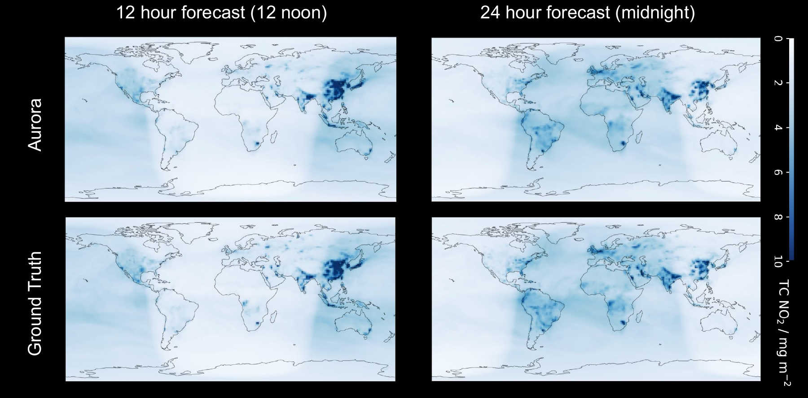
Air quality vs CAMS
CAMS: Europe’s air-pollution forecasting system
Baseline: global physics + chemistry forecast
Below zero → Aurora has lower error
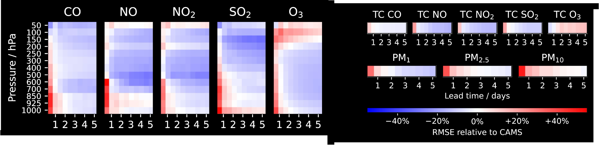
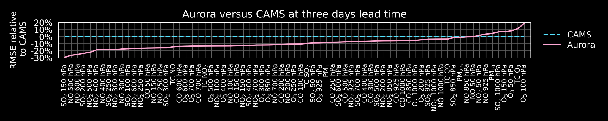
RMSE = root-mean-square forecast error · Compared across pollutants, levels and lead times · Aurora, Nature 2025Iraq’s severe sand storm
13 June 2022 · Aurora captures the dust plume a day ahead
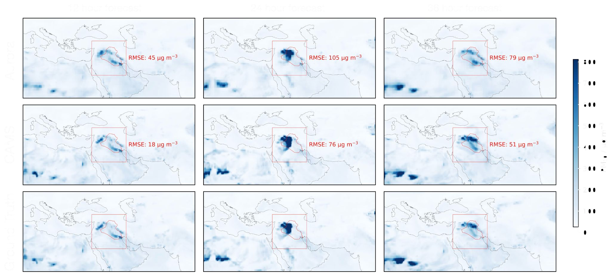
Darker blue = higher airborne-particle concentrations (PM₁₀) · Red box: Iraq evaluation region · Aurora, Nature 2025Atmospheric dynamics
coupled to wave dynamics
Atmospheric winds
Surface roughness
changes wind drag
Energy transfer
Swell travels outward
Forecast the sea state
Height Period Direction
Schematic wind–wave coupling · NOAA National Ocean Service / NDBCCapturing extreme ocean waves
Typhoon Nanmadol · South of Japan · 17 September 2022 · 24 hours ahead
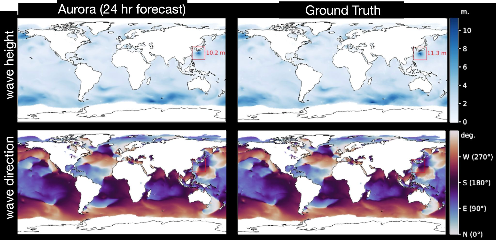
Top: significant wave height · Bottom: mean wave direction · Red box: typhoon region · Aurora, Nature 2025Ocean waves vs HRES-WAM
HRES-WAM: ECMWF’s high-resolution physics-based ocean-wave model
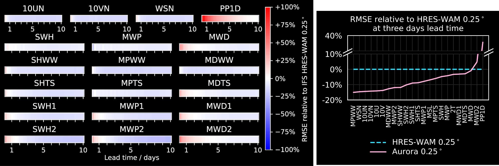
Below zero → Aurora has lower forecast error · Baseline: European Centre for Medium-Range Weather Forecasts · Aurora, Nature 2025Tropical cyclone forecasting
Outperforms official forecasts from government agencies
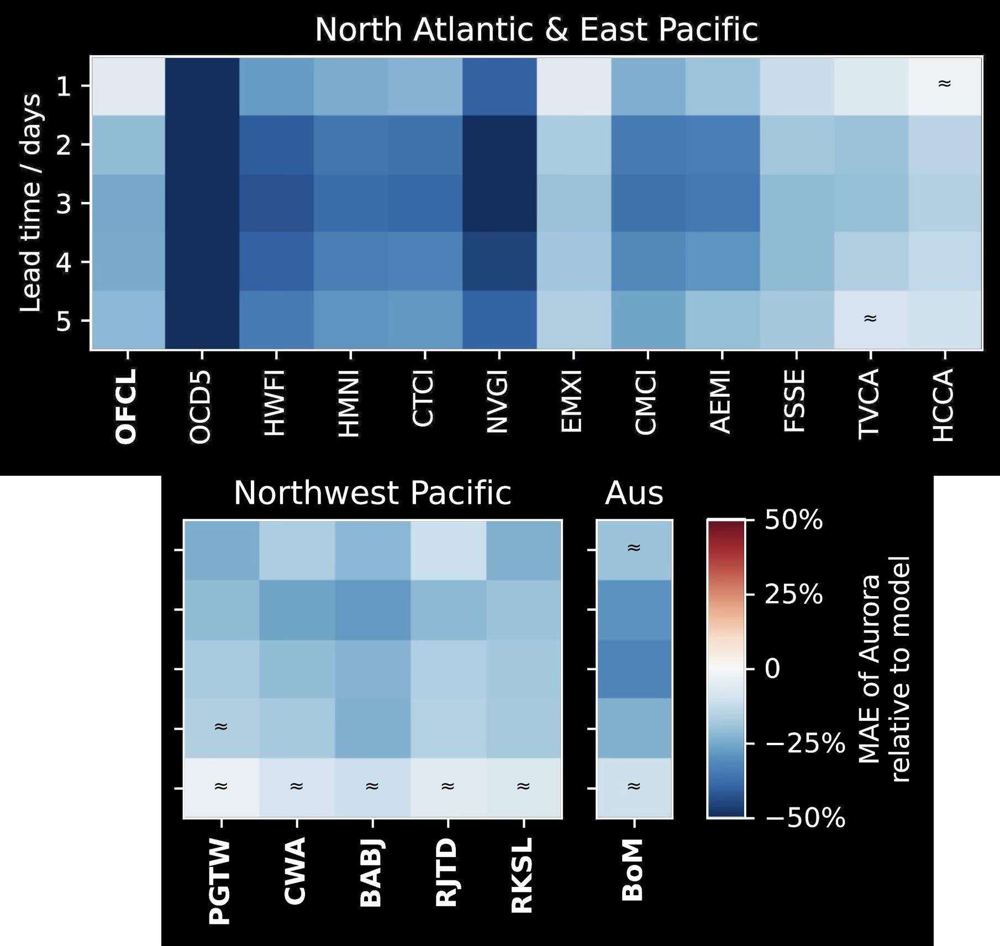
Bold labels: official agency forecasts. Other labels: model guidance and statistical baselines.
2022–2023 evaluation · Track MAE; negative values indicate lower error · Aurora, Nature 2025Rime ice
Supercooled droplets freeze on contact.
Local clouds
Where is the liquid water?
Wind & droplet transport
What reaches the line?
Freezing & ice growth
How much ice accumulates?
Small-scale clouds. Complex microphysics. Sparse observations.
Conceptual schematic · Ice loading can cause line failures · Bodnar et al. (2025), §3.1Post-training for rime ice
Weather foundation model + Hydro-Québec observations
Power network
Average precision · higher is better
24-hour icing · 14 monitoring sites
† Makkonen index from ERA5 reanalysis,
not an operational forecast.
Do these models
learn the physics?
Recovering seasonal temperatures
Aurora · Two-year rollout
2,920 consecutive six-hour predictions · Arctic surface temperature
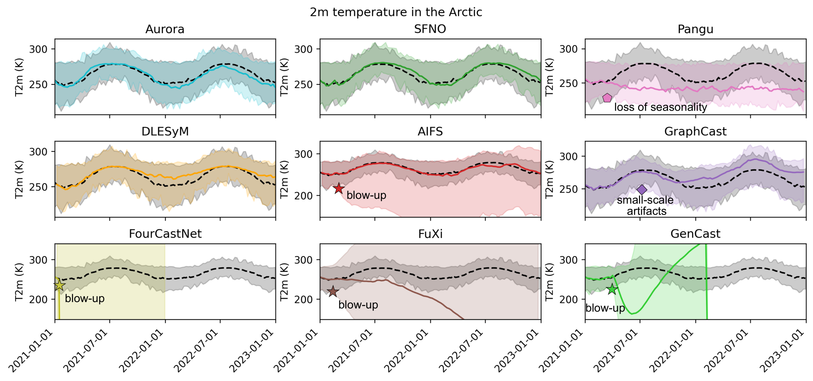
Lines: regional means · Shading: spatial min–max · Calendar date supplied to the model
Lehmann et al. (2026), Fig. 1 · Aurora panel; colors adapted for dark background · arXiv:2605.30184Textbook simulations
Pangu-Weather · An idealized dynamics test
0 h · Height disturbance; no wind anomaly
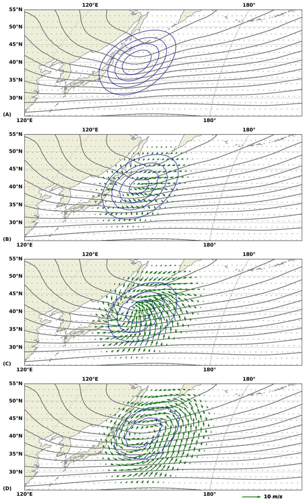
1 h · Winds accelerate toward the disturbance
3 h · Winds turn under the Coriolis effect
6 h · Winds approach balance with the height field
Blue: height anomaly · Green: wind anomaly · Grey: full height field · 500 hPa
Hakim & Masanam · Fig. 5, arXiv:2309.10867 (2023); published 2024 · CC BY-SA 4.0 · Panels isolated and colors adaptedSo why haven't we solved
fluid dynamics yet?
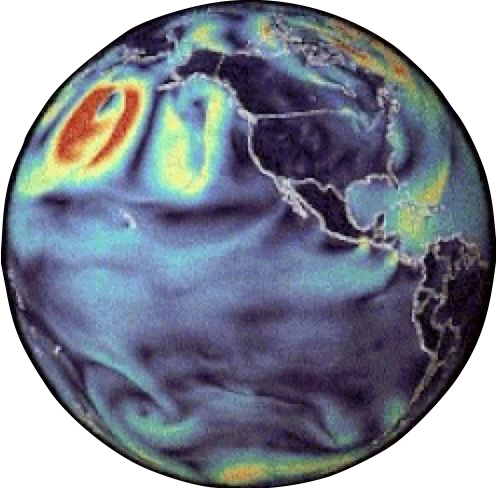
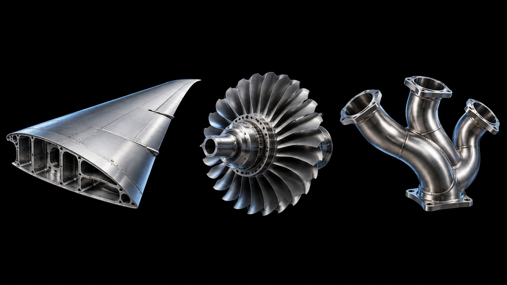
| Weather | Broader CFD | |
|---|---|---|
| Geometry | One geometry | Unlimited geometries |
| Meshing | Established global grids | Hard to automate |
| Simulation data | Extensive archives | Small public datasets |
| Measurements | Rich observations | Very little experimental data |
Thank you
Cristian Bodnar
Project Prometheus
cbodnar@prometheus.ai